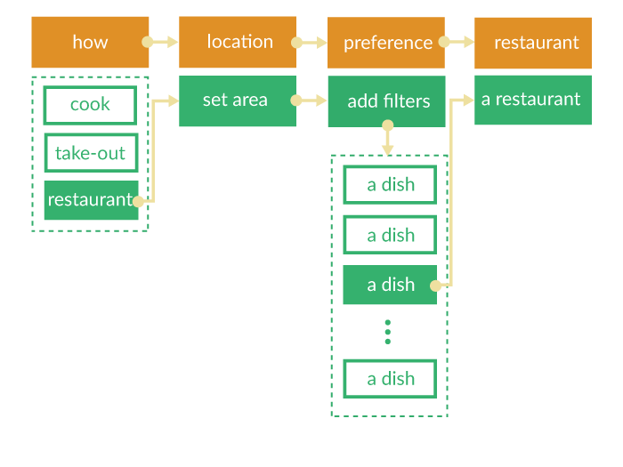
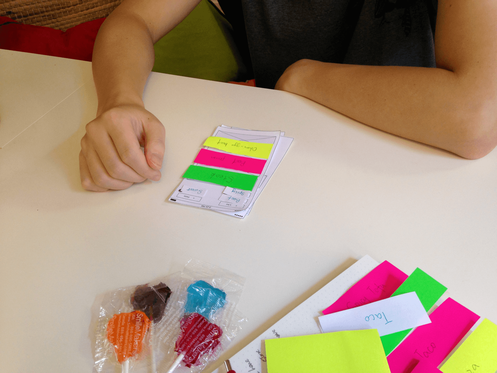

You might be familiar with this scenario, you survive the whole day work, no idea of what to eat for dinner. You find the food you always have is boring, but don’t want to take a risk of trying new dishes. Or even worse, you don’t have a clue of the food you want to take a risk on.
Based on my researches, I focused on making the “What” question start with a “Which”. So I decided to build an app to simplify the process.
It’s easier to have a preference than a standard, since standard involves reasons that takes thoughts but preference involves feelings that can be quick. And the machine learning can take care of dish pics offering according to the choices.
Then I focused on how many dishes to display for users to choose from. It turns out the better number to choose from is 3 or 4. And choosing was preferred by those who have difficulties with making decisions.
“It will save me a lot of time for promoting restaurants to my girlfriend!” Said a lot during the user testings. It seemed what to eat is a more significant problem among couples.
